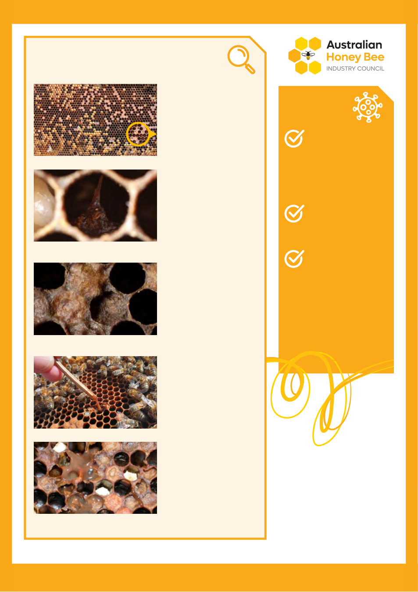

Biosecurity
reminders
Maintain clear
hive-group barriers
and avoid swapping
supers, frames, or
comb between these
hive groups.
Clean hive tools
between hives
or hive groups.
Carefully inspect
brood during
spring build-up
and investigate
any unusual brood
patterns or signs
of disease.
24 | Published since 1918 by the VAA – founded in 1892
Recognising AFB: common signs
The following signs commonly occur in colonies affected by AFB,
although not every infected colony will display all of them.
■ Spotty or irregular
brood pattern, with
perforated brood
cappings, holes are
often off-centre.
Photo credit DPIRDWA
■ Dark, sunken cappings
that may appear greasy.
Courtesy The Animal and Plant Health Agency (APHA),
Crown Copyright
■ Decaying larvae form
a light to dark brown,
semi-fluid mass which
can stretch into a
smooth, elastic rope
when tested with a
stick (ropiness test).
Photo credit DPIRD
■ A distinctive rotten
or sulphurous odour
Courtesy The Animal and Plant Health Agency (APHA),
Crown Copyright. Adapted by author.
Courtesy The Animal and Plant Health Agency (APHA),
Crown Copyright
■ Protruding pupal
‘tongue’, where
brood has developed
to the pupal stage
before dying.